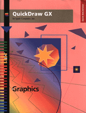

QuickDraw GX Graphics
Inside Macintosh: QuickDraw GX Graphics is your essential guide to using QuickDraw GX, the object-based graphics programming environment, to add powerful, flexible graphics capabilities to your application. This book presents an overview of the underlying graphics concepts, numerous programming examples, and reference material for the data structures and functions you use to create graphics with QuickDraw GX.
Inside Macintosh: QuickDraw GX Graphics starts with an introduction to three types of shapes that you can use to create graphics: geometric shapes, bitmap shapes, and picture shapes.For all three types of shapes, this book shows you how to create, edit, and draw them, as well as how to convert between them. Before reading this book, you need to be familiar with the general concepts of QuickDraw GX, which are described in Inside Macintosh: QuickDraw GX Objects For information on creating and manipulating text-based shapes, see Inside Macintosh: QuickDraw GX Typography. For information on printing graphics and text, see Inside Macintosh: QuickDraw GX Printing.
Availability Click below to obtain Inside Macintosh: QuickDraw GX Graphics in any of the following formats.

|
Acrobat (5023K) |